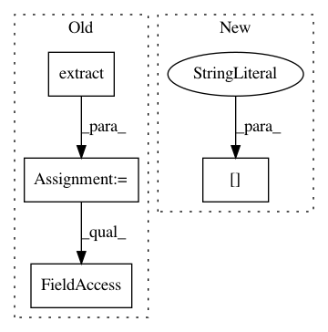

4a24e4e36ee175aef54b92eb03e08a2be7811a96,recordlinkage/datasets/febrl.py,,_febrl_links,#Any#,27
Before Change
Get the links of a FEBRL dataset.
df_empty = df[[]].reset_index()
df_empty["key"] = df_empty["rec_id"].str. \
extract(r"rec-(\d+)", expand=True)[0]
// split the dataframe (org and dup)
org_bool = df_empty["rec_id"].str.endswith("org")
// merge the two frame and make MultiIndex.
pairs = df_empty[org_bool].merge(df_empty[~org_bool], on="key")
pairs_mi = pairs.set_index(["rec_id_x", "rec_id_y"]).index
pairs_mi.names = [None, None]
return pairs_mi
After Change
pairs_df = df_helper.merge(
df_helper, on="key"
)[["index_x", "index_y"]]
pairs_df = pairs_df[pairs_df["index_x"] > pairs_df["index_y"]]
return pandas.MultiIndex(
levels=[df.index.values, df.index.values],
In pattern: SUPERPATTERN
Frequency: 3
Non-data size: 4
Instances
Project Name: J535D165/recordlinkage
Commit Name: 4a24e4e36ee175aef54b92eb03e08a2be7811a96
Time: 2018-03-10
Author: jonathandebruinhome@gmail.com
File Name: recordlinkage/datasets/febrl.py
Class Name:
Method Name: _febrl_links
Project Name: arviz-devs/arviz
Commit Name: f7e16c6997c76bd77c06ea0284a784e2ef029a5c
Time: 2018-08-27
Author: ari.hartikainen@aalto.fi
File Name: arviz/utils/xarray_utils.py
Class Name: PyStanToNetCDF
Method Name: default_varnames_coords_dims
Project Name: tyarkoni/pliers
Commit Name: c19000b012bba5fa7ae54fadc953f5b679dead4f
Time: 2016-10-20
Author: quinten.mcnamara@gmail.com
File Name: featurex/tests/test_extractors.py
Class Name:
Method Name: test_optical_flow_extractor